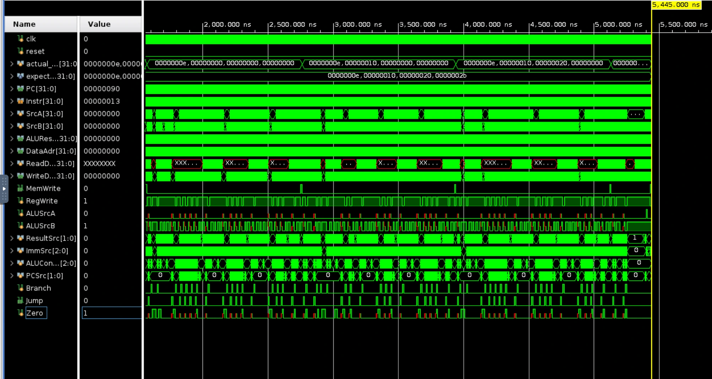
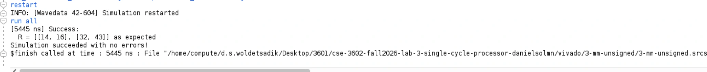
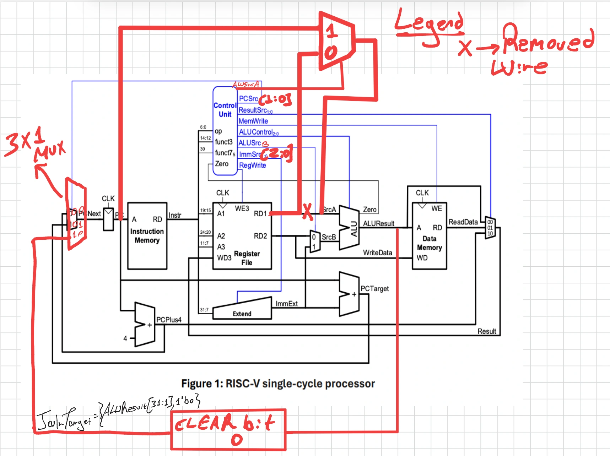
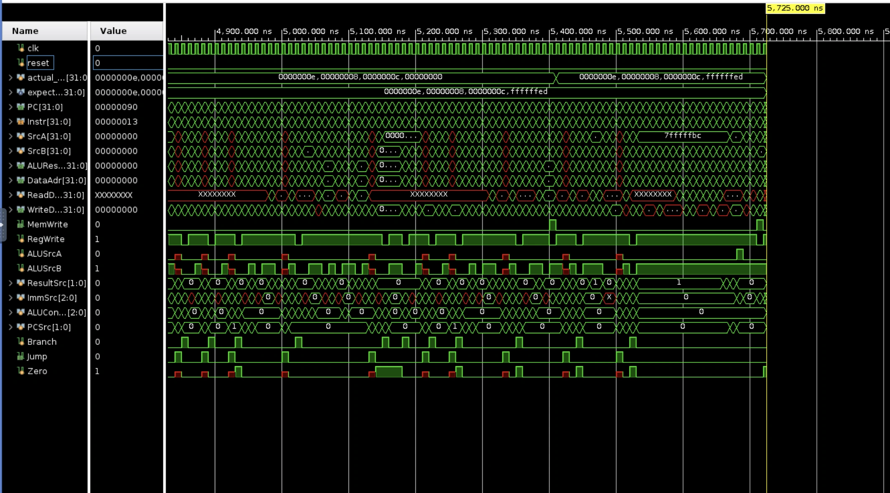
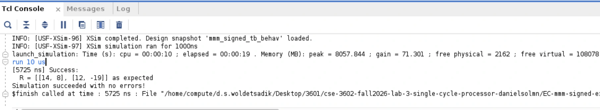

COMPUTER ARCHITECTURE / RISC-V
Single-cycle
RISC-V processor.
Extending a SystemVerilog processor to run matrix multiplication, with waveform and testbench verification.
What I built
Extended the provided single-cycle processor with AUIPC, SLLI, and JALR. Updates included a PC/register ALU-input selector, a three-bit immediate selector with U-type support, left-shift decoding, and a register-based jump path that clears address bit zero.
The final processor runs the unsigned matrix-multiplication program. A signed-multiplication extension handles negative operands in software using existing instructions.
Waveform verification
Checked the program counter, ALU results, register writes, memory controls, and branch/jump behavior against the test program. The report records ADD producing 0xB at PC 0x14, a taken branch at PC 0x20, and JAL from 0x40 to 0x48.

Matrix testbench
For A = [[1, 2, 3], [4, 5, 6]] and B = [[1, 4], [2, 3], [3, 2]], the testbench compares the computed matrix against R = [[14, 16], [32, 43]]. The captured run reports success at 5,445 ns with no simulation errors.


See annotated datapath and signed-extension verification



Evidence comes from the supplied lab report. The simulation was not rerun for this portfolio entry. The separate weighted-average instruction strategy was a proposal, not part of the implemented processor described here.